Compile 2015 VS Community Workflow
UNDER CONSTRUCTION
Aim
To show one workflow for setting up a Windows pc for compiling OpenCPN.
The pc used was a 'win-32-x86 machine', running Windows 8.1.
If you are running 'x64' you will need to download the 64 bit installers for some of the programs used here. This applies to:
-
Git
-
CMake
-
7Zip
The steps will follow the instructions here.
'Navigate' means using 'Windows Explorer' to find a folder or file.
'cd' or 'CD' is used in a Terminal window to 'change directory' (aka 'change folder')
Method
-
This assumes that you have accepted the suggested locations for installing the various programs.
Install Visual Studio Community 2015
-
Download the installer.
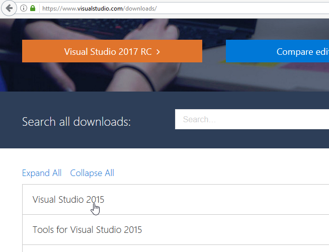
-
Install Visual Studio by a double-click on the installer '.exe'. Use the 'Custom' method and select the 'C++ language'. We are going to continue trying to build a version of OpenCPN that will run on Windows XP.
-
Tick the box 'Windows XP Support for C++'
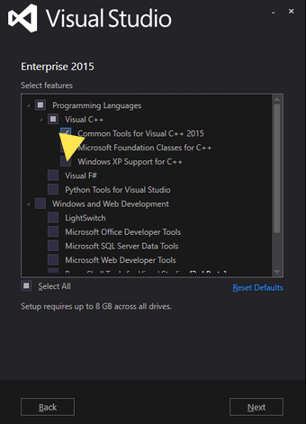
Note:
-
If you have used the default ('Typical') installer option you will need to configure the program to use C++.
-
Right-click the Windows icon (bottom left) Select 'Programs and Features'. Select 'Microsoft Visual Community 2015 with Updates'. Right-click 'Change'.
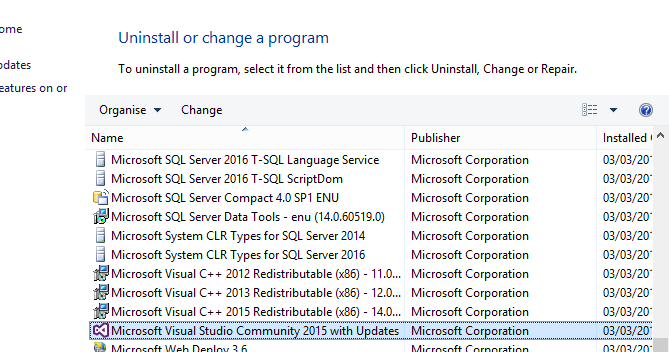
-
Tick the C++ language option
-
You now have a lengthy wait while another install takes place
-
Lesson … 'Use Custom'
Install Git
Get the Git installation packages from https://git-for-windows.github.io/
-
Install and let it register in the PATH environment variable
-
The defaults for all the installation settings are fine except for just the following:
-
On the Adjusting your PATH environment, select Run Git from the Windows Command Prompt.
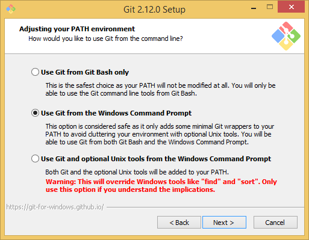
-
On the Choosing CR/LF behavior select Checkout as-is, Commit Unix LF.
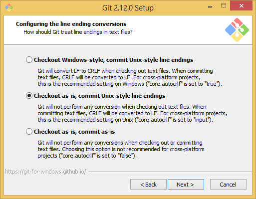
-
This is really important, the codebase uses Unix LF line endings and committing CR/LF makes the commits huge and hides their real content.
Install CMake
-
Get the latest CMake installation packages from http://www.cmake.org
-
The installer used is shown at the bottom of this screenshot.
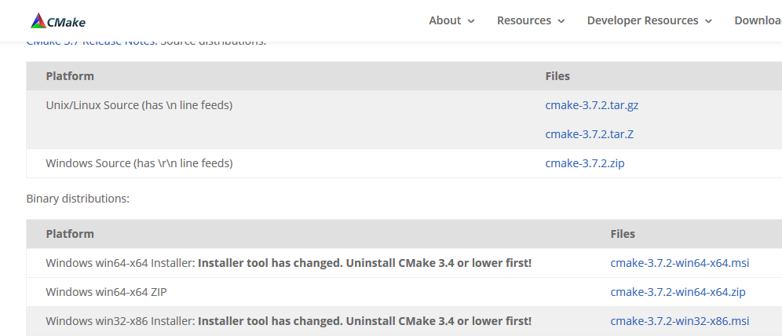
-
As part of the install choose this option:
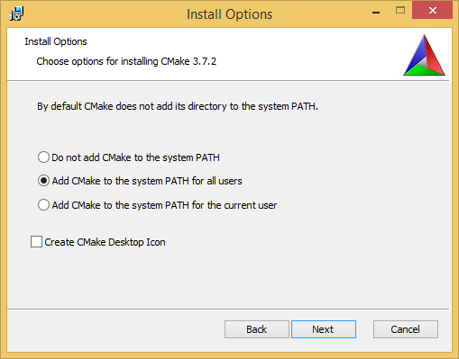
-
Install CMake and let it register the 'Path' environment variable
Install Poedit
Get the latest 'Poedit' installation package from http://www.poedit.net
-
Install 'Poedit'.
-
Add 'C:\Program Files\Poedit\GettextTools\bin' to the PATH environment variable.
-
Select 'System' and in the left column click 'Advanced System Settings'.
-
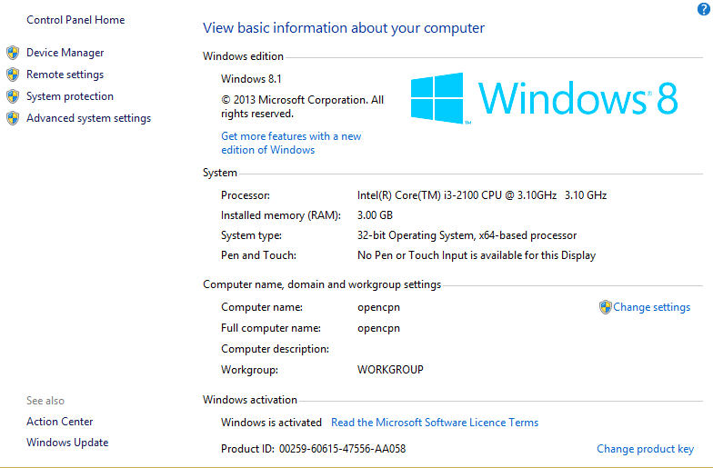
-
On the Advanced tab, click on the 'Environment Variables' button.
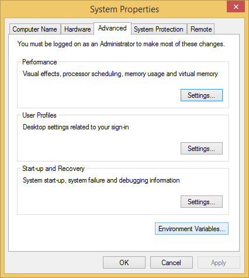
-
Under 'System Variables' find the 'Path' system variable. Press 'Edit'.
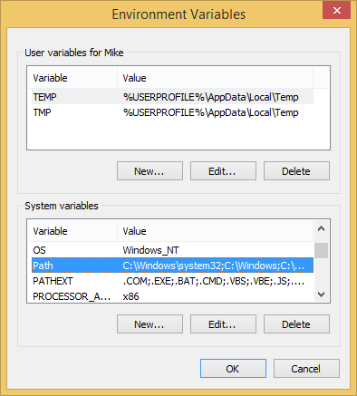
-
In 'Variable value' add ';C:\Program Files\Poedit\GettextTools\bin' to the end of the list. (The semicolon is important!)
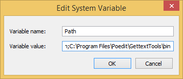
-
Press 'OK' a number of times to save and exit.
Note: If you look in the 'C:\Program Files\Poedit\GettextTools\bin' folder you will see the file 'msgfmt.exe' which does the work of the program.
Install NSIS
In case you want to create installation packages, install NSIS Unicode 2.46.5 from http://www.scratchpaper.com/
-
Choose the Unicode version for 'win32-x86'. All the default settings can be accepted.
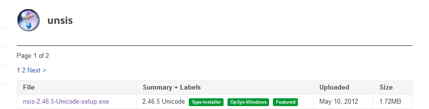
There is a "bug" in CMake, which only looks at "HKEY_LOCAL_MACHINE\SOFTWARE\NSIS" for the installation location of NSIS
The Unicode version adds its registry key in "HKEY_LOCAL_MACHINE\SOFTWARE\NSIS\Unicode".
Some registry tweaking is needed.
-
Open a 'Command Prompt' and type and run 'regedit'. This starts the 'Registry Editor'.
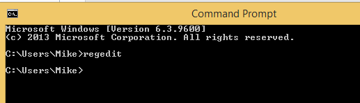
-
Navigate to 'HKEY_LOCAL_MACHINE\SOFTWARE\NSIS\Unicode'. Double-click on the 'Default' line.
Note: If you are running a 64-bit machine (x64) the key is located in 'HKEY_LOCAL_MACHINE\SOFTWARE\Wow6432node\NSIS\Unicode'
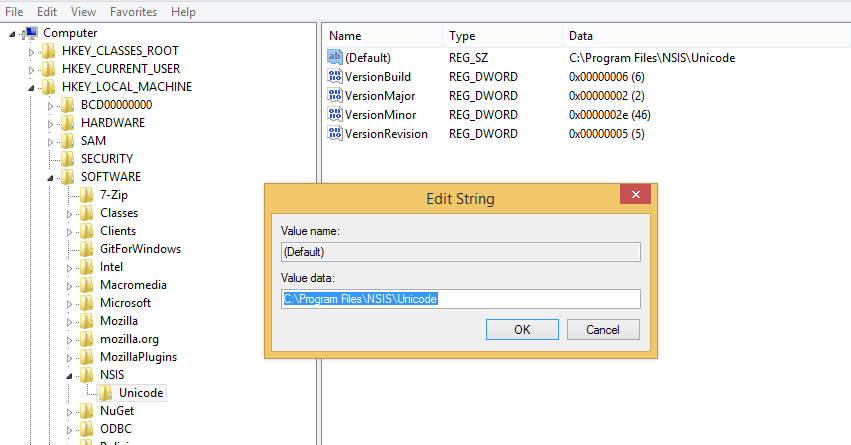
-
Copy the value (The installation path of NSIS).
-
Navigate to 'HKEY_LOCAL_MACHINE\SOFTWARE\NSIS'.
Note: If you are running a 64-bit machine (x64) the location is 'HKEY_LOCAL_MACHINE\SOFTWARE\Wow6432node\NSIS'.
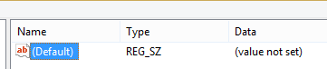
-
Double-click on the 'Default' line and paste the install path into 'Value data'.
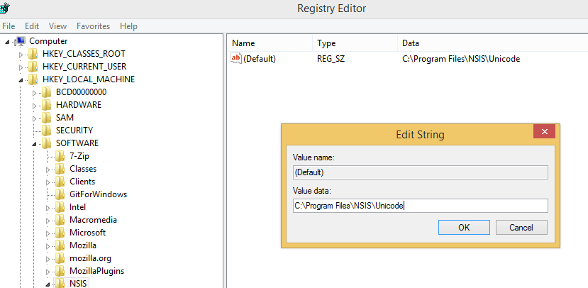
To make the installer package use proper language name translations, it is necessary to modify file 'C:\Program Files\NSIS\Unicode\Contrib\Language files\Norwegian.nsh' and change the line
!insertmacro LANGFILE "Norwegian" "Norwegian"
to
!insertmacro LANGFILE "Norwegian" "Norsk"
The 'C:\Program Files\NSIS\Unicode\Contrib\Language files\Norwegian.nsh' is edited.
Due to 'Security' you will need to add 'Write' permission to this file. Without this you will not be able to save the changes.
-
With 'Explorer' navigate to 'C:\Program Files\NSIS\Unicode\Contrib\Language files\'.
-
Right-click on the file 'Norwegian.nsh'.
-
In 'Properties', 'Security' tab, press the 'Edit' button.
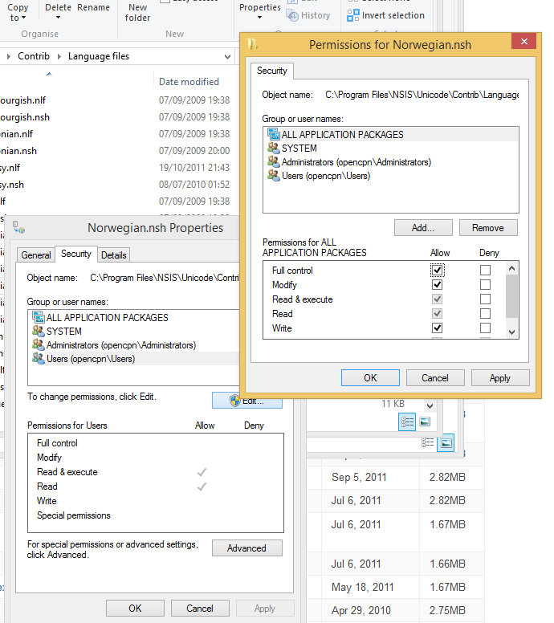
-
Select 'Users' and tick all the 'Allow' boxes.
-
The 'C:\Program Files\NSIS\Unicode\Contrib\Language files\Norwegian.nsh' can now be opened with 'WordPad' or 'Notepad' and the changes made and saved.
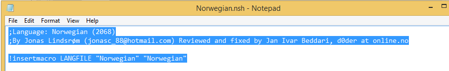
Compile wxWidgets 3.0.2
-
Download the '3.0.2 release' as a 'zip' file from http://wxwidgets.org/downloads/
-
Navigate to the folder where you downloaded the zip.
-
Right-click on the file 'wxWidgets-3.0.2.zip' and select the menu option 'Extract All…'.
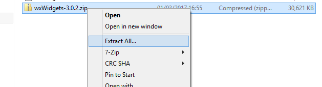
-
Edit the folder for the Destination to read 'C:\wxWidgets-3.0.2' and press the 'Extract' button.
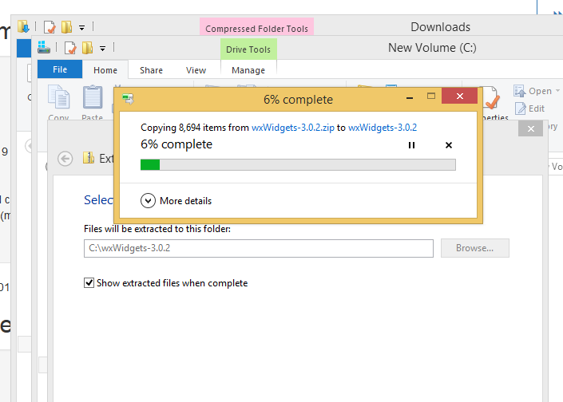
Compile wxWidgets with Visual Studio Community 2015
-
Find the Visual Studio solution ('sln') file in the folder 'C:\wxWidgets-3.0.2\build\msw'
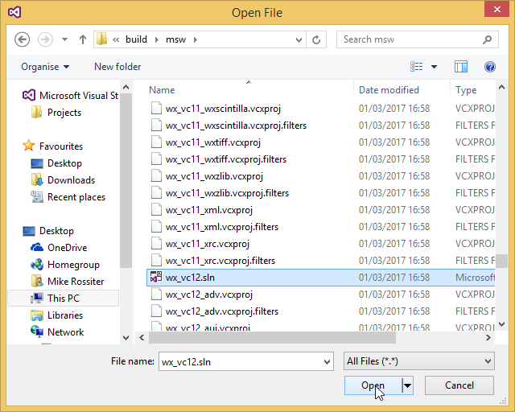
-
Double click on the filename to open the solution in Visual Studio
-
Decided to ignore the security warning
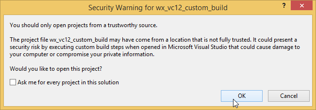
-
Some changes are needed to the source files (Credit to 'doublemax' on forums.wxwidgets.org - topic 40491)
1) <wxdir>\src\zlib\gzguts.h - line 102
change:
Code: Select all
#ifdef _MSC_VER
# define snprintf _snprintf
#endif
to:
Code: Select all
#if (defined(_MSC_VER) && (_MSC_VER <1900))
#define snprintf _snprintf
#endif
2) <wxdir>\src\tiff\libtiff\tif_config.h - line 367
change:
Code: Select all
#define snprintf _snprintf
to:
Code: Select all
#if (defined(_MSC_VER) && (_MSC_VER <1900))
#define snprintf _snprintf
#endif
3) <wxdir>\include\wx\propgrid\advprops.h - line 453
change:
Code: Select all
wxDateTime GetDateValue() const
{
//return m_valueDateTime;
return m_value;
}
to:
Code: Select all
wxDateTime GetDateValue() const
{
//return m_valueDateTime;
return m_value.GetDateTime();
}
Line numbers based on wxWidgets 3.0.2 (not the latest development version).
-
Find the 3 pages using 'Solution Explorer'. The first 2 are under the projects in 'Additional Dependencies'.
-
Use the editor to make the changes. The changes are saved when you build the solution.
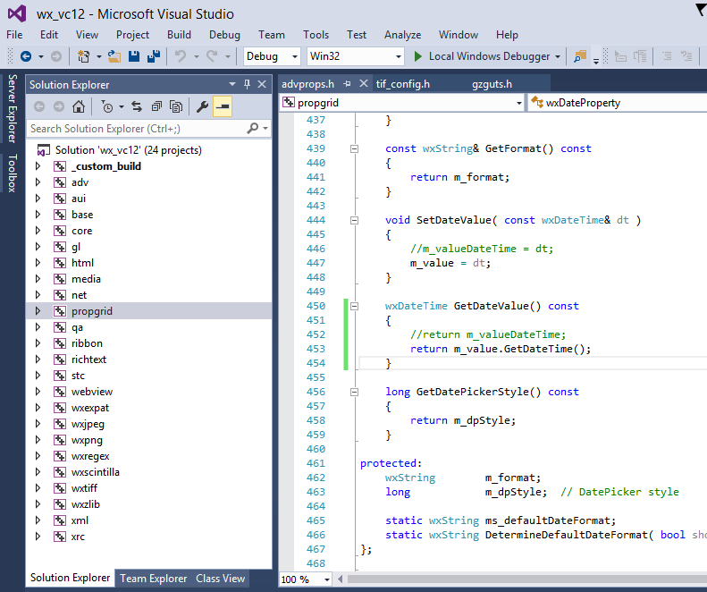
-
On the Toolbar select 'Dll Debug'
-
In Solution Explorer select all the projects from '_custom_build' down to the bottom ('xrc'). You can do this by selecting the first project, keeping the left button down and extending the highlight to the bottom using the 'Down' key.
-
Right click on the highlighted area. Select 'Properties', 'Configuration Properties', 'General'. Under 'Platform Toolset' use the dropdown to select 'Visual Studio 2015-Windows XP (v140_xp)'
-
'Apply', 'OK'
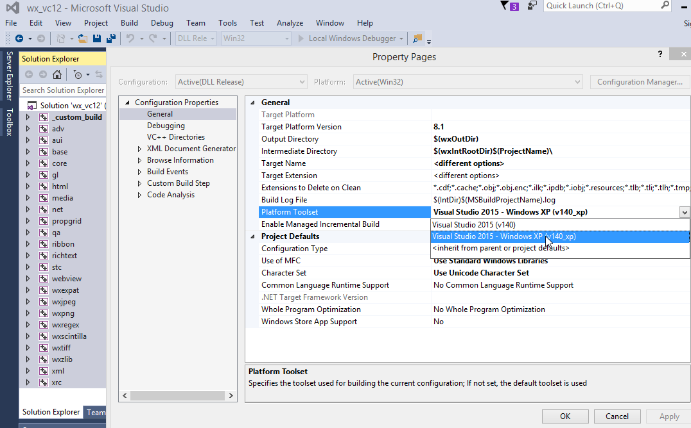
-
At the top of the window select 'Build', 'Build Solution'
-
Run the 'Dll Debug' build
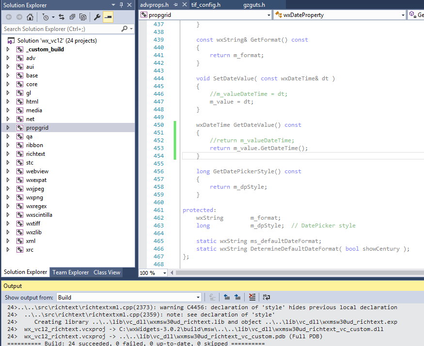
-
Follow the same steps for 'Dll Release', which will make the build compatible with Windows XP.
-
Run 'Build', 'Build Solution'
-
Save and close the solution
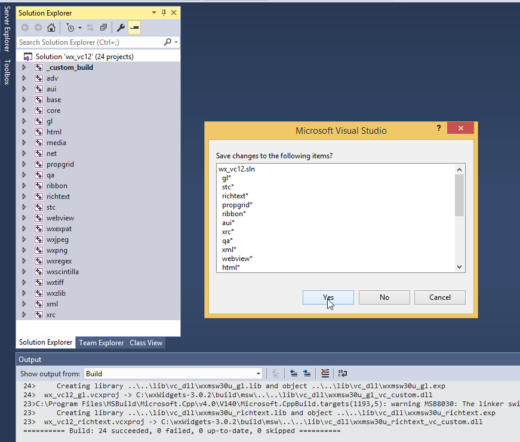
You will find that a number of files have been made in the folder 'c:\wxWidgets-3.0.2\lib\vc-dll'.
Some of the filenames start 'wxmsw30u' and others 'wxmsw30ud' corresponding to the 'Release' and 'Debug' versions.
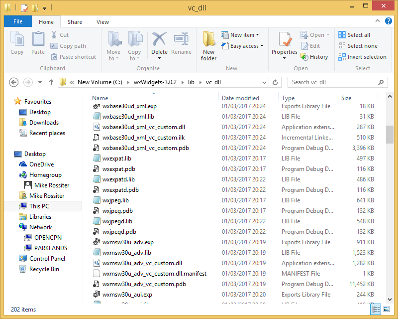
This completes the preparations for building the OpenCPN program.
Building OpenCPN
Get the OpenCPN source
-
Make a folder to store your OpenCPN source code files. In this guide I am going to call it 'Example' in the root folder, i.e. 'C:\Example\'.
-
Start a 'Command Prompt' (Any prompt will work - just right-click on your Window icon) and select 'Command Prompt'. A Terminal window will appear.
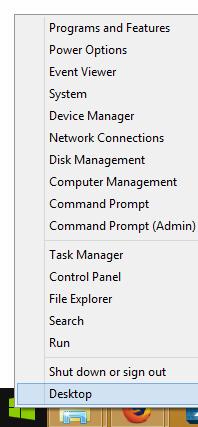
-
CD to the 'Example' folder. (Type 'cd C:\Example' and press 'Enter').
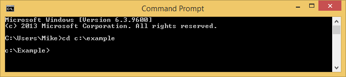
-
Type this text into the Terminal window and press 'Enter'.
git clone git://github.com/OpenCPN/OpenCPN.git
-
This will download the latest Beta code.
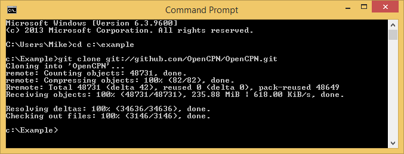
-
The files/folders for building 'OpenCPN' will be placed in the folder 'C:\Example\OpenCPN'
-
If you are happy to work with the Beta version source code … move on to the next section.
Note: If you want the source code for the latest stable release (4.4.0 at time of writing) you need to locate that source on GitHub.com:
-
Press the 'Clone or download' button. DO NOT use the text for 'git clone' or you will get the Beta version. Instead …
-
Select 'Download Zip' and save the zip file.
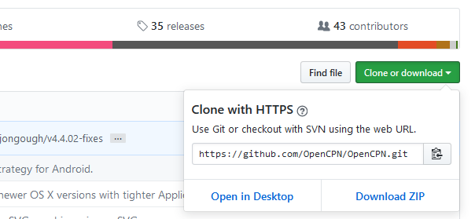
-
Extract the files to the folder 'C:\Example'
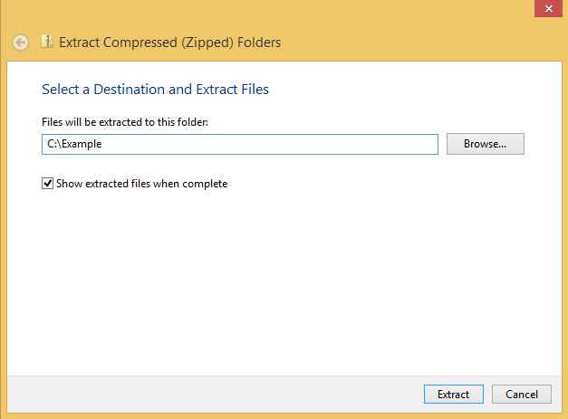
-
The files/folders for building 'OpenCPN' will be placed in the folder 'C:\Example\OpenCPN-4.4.0'
-
These are the files that are going to be used for this workflow. This folder is renamed 'C:\Example\OpenCPN' to make the process steps read in the same way as for the files from 'git clone' (the Beta version).
Get the binary dependency files
Sorry, this needs another program - 7Zip.
-
Get the installer from here.
-
7z files are compressed files making them smaller and faster to download. The '7Zip' program allows you to extract the original files. 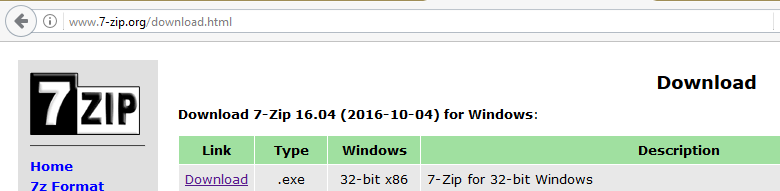
-
After the download double-click the '7z….exe' file to carry out the installation.
-
You need to restart the computer.
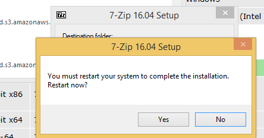
'7z' files can now be opened and extracted with this program.
-
Download OpenCPN_buildwin.7z
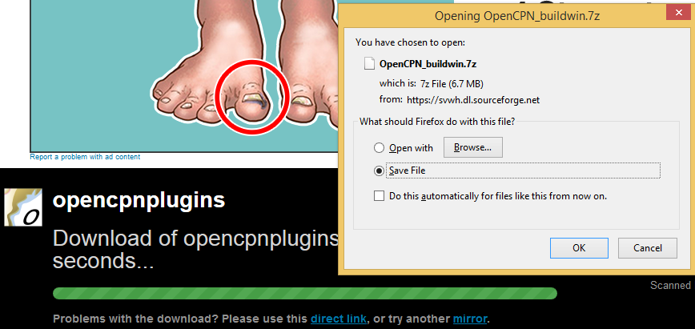
-
Right-click on this file in 'Windows Explorer'. Select the option '7-Zip', 'Extract Files'.
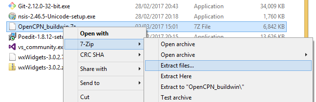
-
Select the folder 'C:\Example\OpenCPN. The files and folders from the 7z file will be placed under that directory 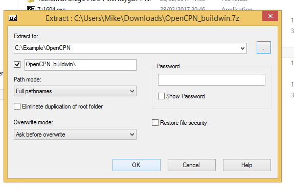
-
Uncheck the box next to the text 'OpenCPN_buildwin'.
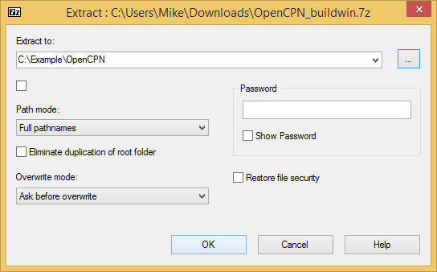
-
Use the 'No to All' button to avoid overwriting files in the source.
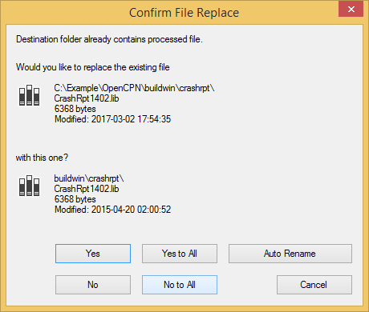
-
This will add extra files in the folder 'C:\Example\OpenCPN\buildwin' that are needed for the build.
Make a Visual Studio solution for building OpenCPN
-
Start the VS2015 x86 Native Tools Command Prompt
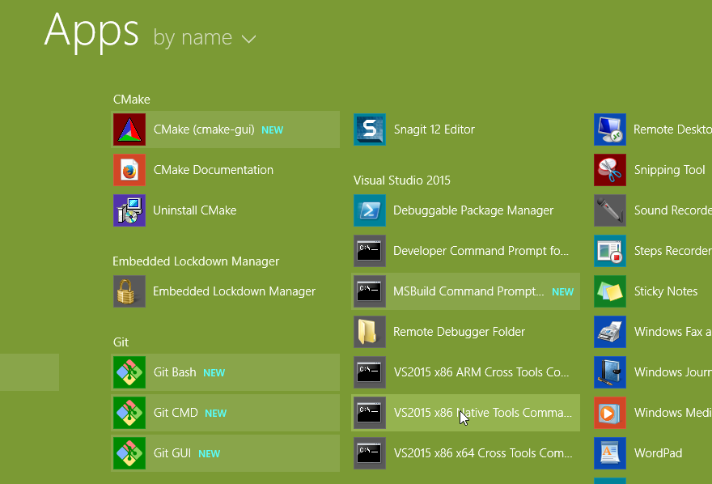
-
The command prompt shortcut is in the folder 'C:\ProgramData\Microsoft\Windows\Start Menu\Programs\Visual Studio 2015\Visual Studio Tools\Windows Desktop Command Prompts'
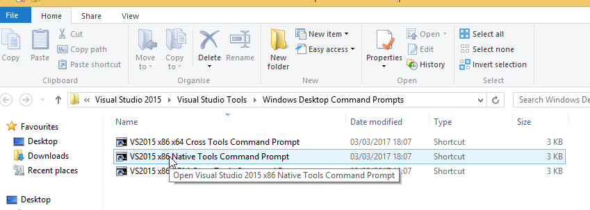
-
Change Directory [cd] into 'C:\Example\OpenCPN'.
-
Create a folder named "build" under this topmost source folder.
mkdir build
-
cd to the "build" folder and then issue the cmake command shown.
cd build cmake -T v140_xp ..
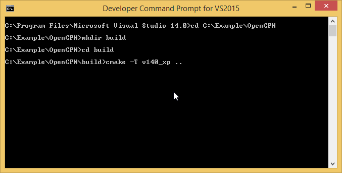
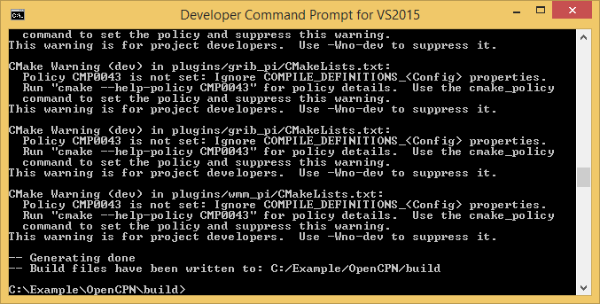
-
Close the Terminal window.
-
This has created the Visual Studio solution file 'OpenCPN.sln'.
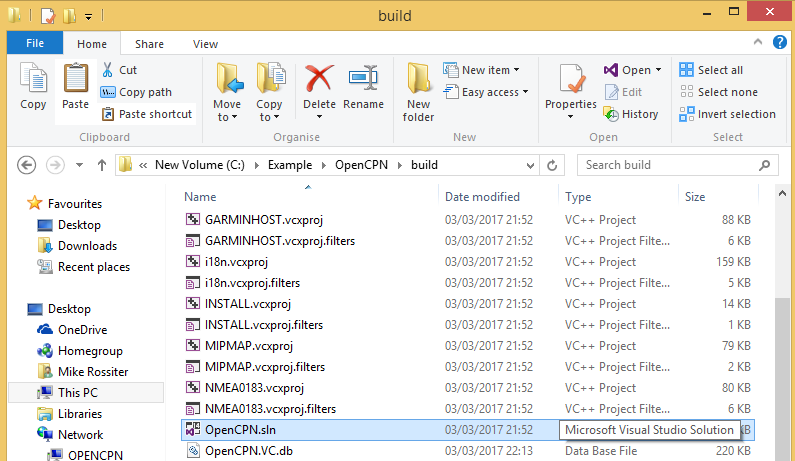
Build OpenCPN
-
Open the '.sln' file with the program Visual Studio Community 2015 (you can double-click the file name)
-
The program window should look like this:
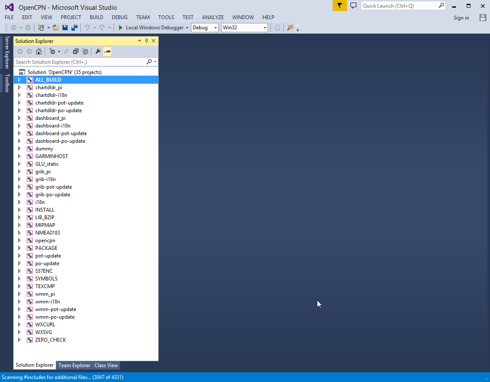
-
Set the project 'opencpn' as the 'Startup Project
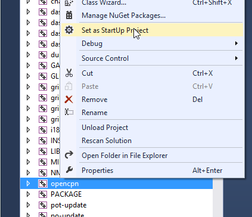
-
A number of additional dependencies need to be added to the following projects
-
dashboard
-
grib_pi
-
opencpn
wxmsw30u_richtext.lib wxmsw30u_adv.lib wxmsw30u_propgrid.lib wxmsw30u_aui.lib
-
Right-click on the project in Solution Explorer
-
Select 'Properties', 'Linker Input', 'Additional Dependencies'
-
Use the drop down to insert the '.lib' files shown above
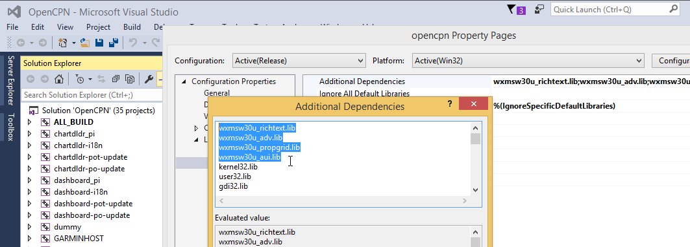
-
To avoid problems later please check the following options are set correctly
-
Select 'Tools', 'Options'
-
Check the settings are the same as shown in these two screenshots


-
From the top of the window choose 'Build', 'Solution'.
-
You will be making a 'Debug' version of the program.
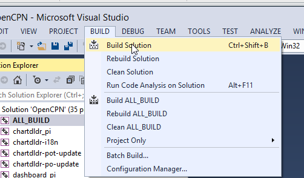
-
The build will take some time but the result should be like this:
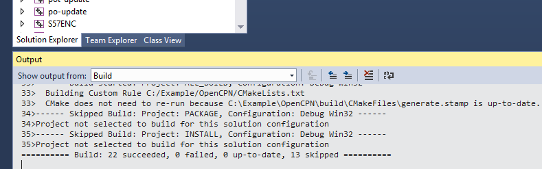
-
All is going well. The release version will now be made.
-
Change the 'Dropdown' from 'Debug' to 'Release'.
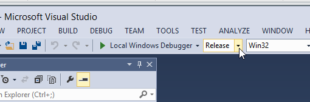
-
From the top of the window choose 'Build', 'Solution' again.
-
Two new folders have appeared in 'C:\Example\OpenCPN\build', called 'Release' and 'Debug'.
Make a package to install OpenCPN
This assumes that you have installed 'NSIS' (The guide was here).
-
The folder 'C:\Example\OpenCPN\buildwin\wxwidgets' has 16 wxWidgets '.dll' files
-
Replace these with the same dll files found in 'C:\wxWidgets-3.0.2\lib\vc_dll'. If this is not done now they will not be included in the package and will have to be copied later.
-
In Visual Studio Solution Explorer you will see a project called 'PACKAGE'.
-
Right-click 'PACKAGE'. Choose 'Project Only', 'Build Only PACKAGE'
-
Run this option.
-
This will produce an installer 'setup.exe' in the folder 'C:\Example\OpenCPN\build\'
Install OpenCPN
-
Double click the setup .exe
-
Accept the default settings
-
The installation will complete with this page
-
Run the finished program
OpenCPN (Version 4.4.0) and the four plugins included in the source files have been built successfully.
In order to run the setup on Windows XP it is necessary to download and run the 'Microsoft Visual C++ Redistributable 2015' installer
This was downloaded from here. I had problems with the version I found elsewhere on Microsoft.